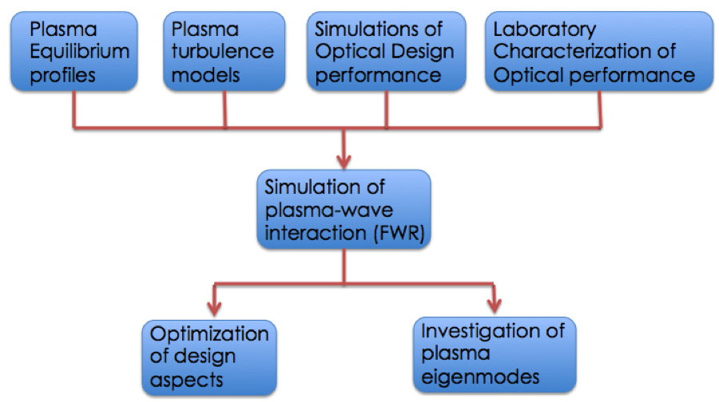
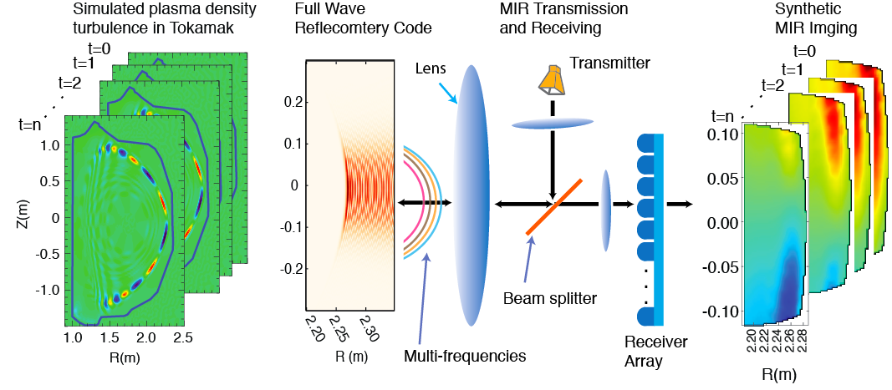

Synthetic MIR approach provides a bridge between plasma simulation codes and real plasma discharges. It simulates the reflectometry response with wave reflected from simulated plasma, and compare it with experimental measurements, thus tell if the simulated modes reasonable or not. It also help to optimize the design parameters of MIR as well as help to interpret experimental results. Figure 1 shows a flow chart of the process of synthetic MIR.

Fig. 1: A simple flow chart for the synthetic MIR diagnostic. The first row is the input parameters to the simulation of the plasma wave-interaction, and the last row is the output from the synthetic simulations.
It has been used to investigate the edge harmonic oscillation (EHO) modes for quiescent high-confined modes. Figure 2 shows the diagram of how synthetic MIR works, and how it is used to measure/simulate density turbulence from plasma simulation codes.

Fig. 2: The process of forward modeling MIR diagnostic output from one MHD code. Time-dependent output from the plasma code has been provided for DIII-D shot # 157102, are inserted as perturbed fields into the simulation domain of the Full-wave refletometry solver. The converged electric field pattern at the outgoing microwave boundary is taken at each time step of the simulation and compared with the receiver antenna pattern to produce a quadrature (amplitude and phase) signal timepoint.